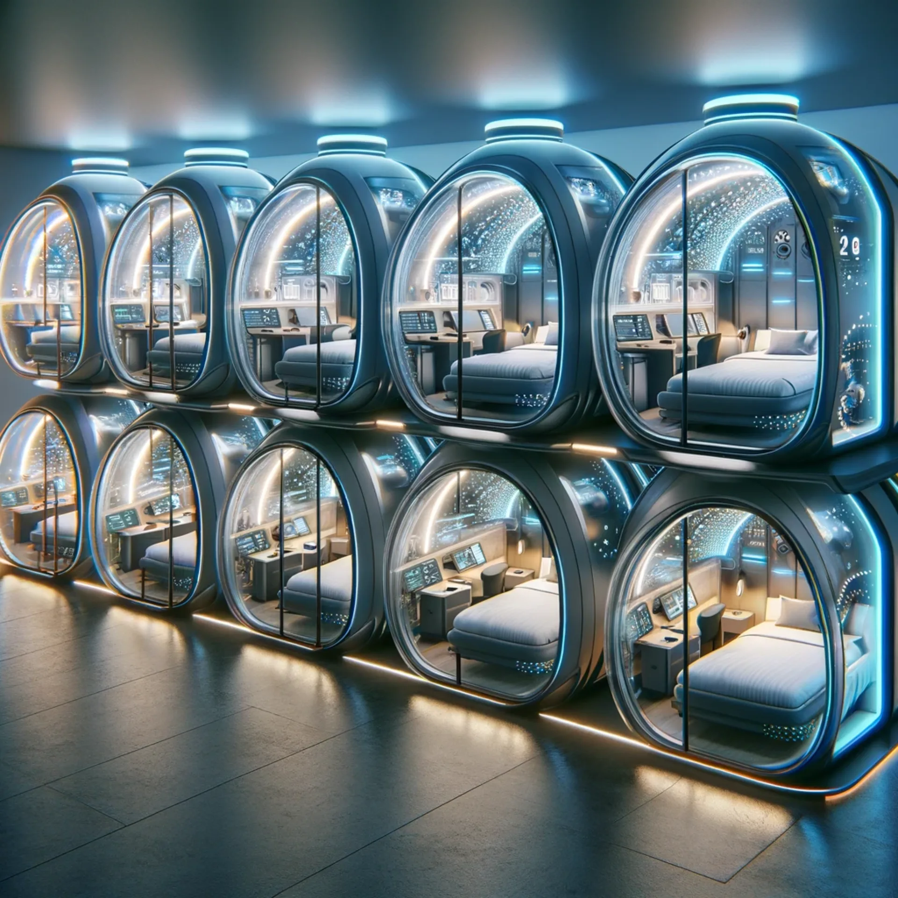
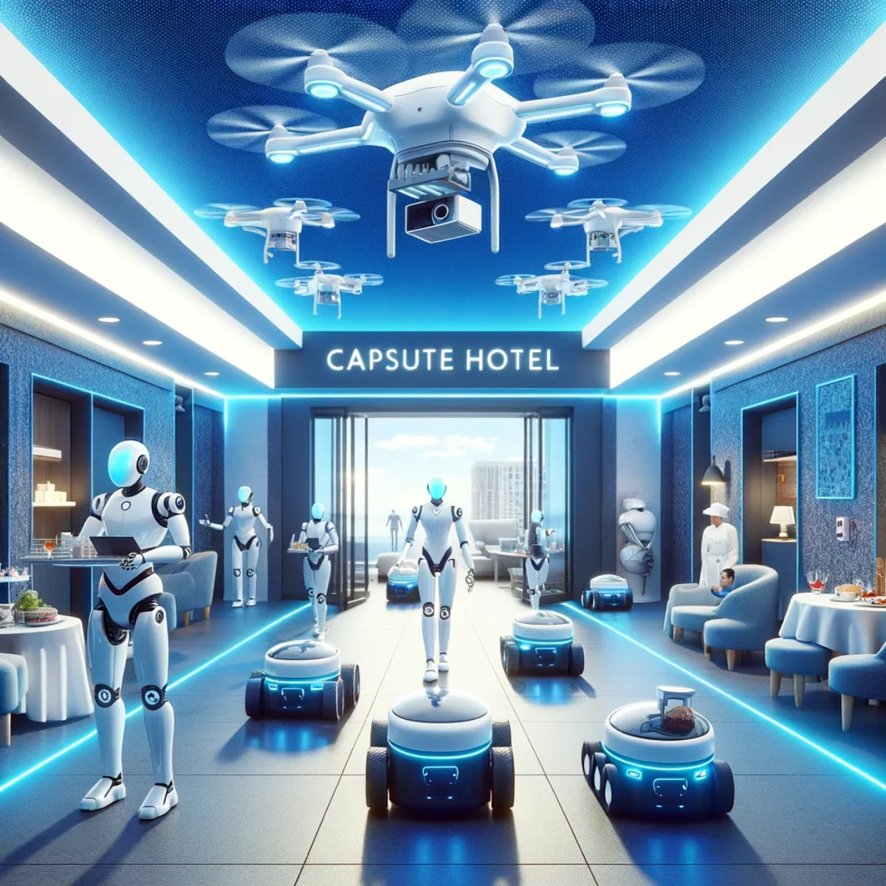
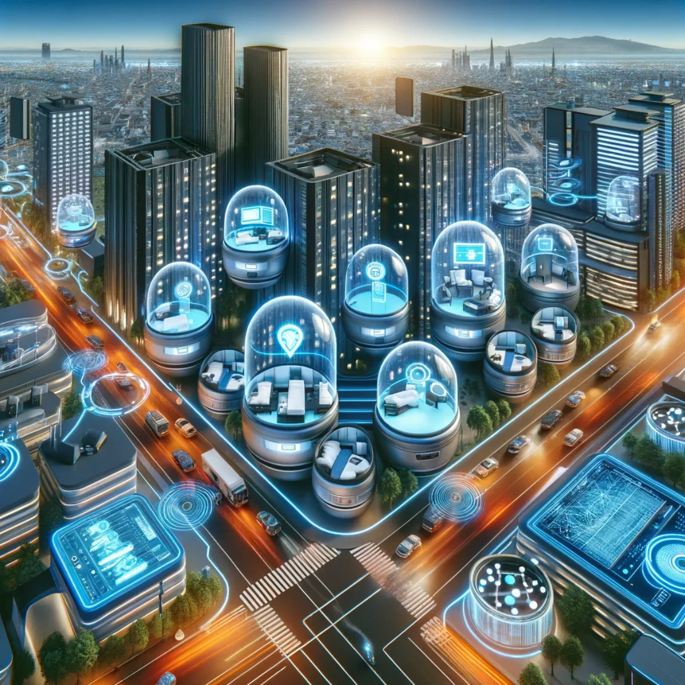

Pathways / Frontiers
Aura Capsule Hotels
AI- and XR-enabled sleep pods, an on-site innovation lab and robotic convenience, all woven into the smart city around them: a future you help shape and own, where your space stays yours.

Sleep in the future, awaken to innovation
Futuristic Pods: Live the Sci-Fi Dream
Step into science fiction made real with the Futuristic Pod concept, and picture shaping it to you. Each capsule is a small sanctuary of innovation, built not just for sleep but for an immersive journey into the future, and it adapts to you: your preferences for entertainment, relaxation, even work. Fitted with AI and XR, the pod becomes personal, learning what you like while your data stays yours rather than harvested by big tech. Inside, ergonomic design and technology meet, opening onto whole worlds of digital experience, from tranquil meditation landscapes to thrilling interstellar adventures, limited only by your imagination.

Where imagination meets implementation
Integrated Innovation Labs: Crafting Tomorrow
The Capsule Hotels Innovation Lab is a shared workshop for tinkerers and visionary thinkers, a place to build rather than just consume. It's made to spark ideas that shape the future of smart cities and beyond, stocked with the tools and resources to experiment, prototype and bring your own concepts to life. More than a think tank, it's a bridge between theory and practice, with workshops, hackathons and showcases. Here collaboration is the currency, and everyone contributes to, and keeps a stake in, a shared vision of the future.

Experience the ease of automation
Automated Convenience: Effortless Living
Automation is here to make a stay simpler on your terms. From check-in to check-out, the systems are built for seamless interaction, so you control your environment, request services and get recommendations with a few taps or a word, and your preferences stay yours. Beyond the usual, intelligent drones handle rapid rooftop deliveries around the city and ground-based robotic assistants of various designs, including humanoids, meet your needs swiftly and efficiently. This blend of AI and robotics turns everyday tasks into ease, shaped around you rather than a one-size-fits-all product.

Your stay, the smart way
Smart City Synergy: Integrated Innovation
A capsule hotel like this isn't just a place to stay; it's a living node in a smart city's vibrant networks. Woven into the city's infrastructure, it makes your personal space as connected as you are while keeping it genuinely yours, tuned for convenience without giving your data away. From smart climate control to automated delivery, the systems anticipate your needs and the city's. The synergy lets you shape your environment both within and outside the pod, a seamless, hassle-free experience that brings modern comfort within reach, even travelling on a budget.
Keep exploring